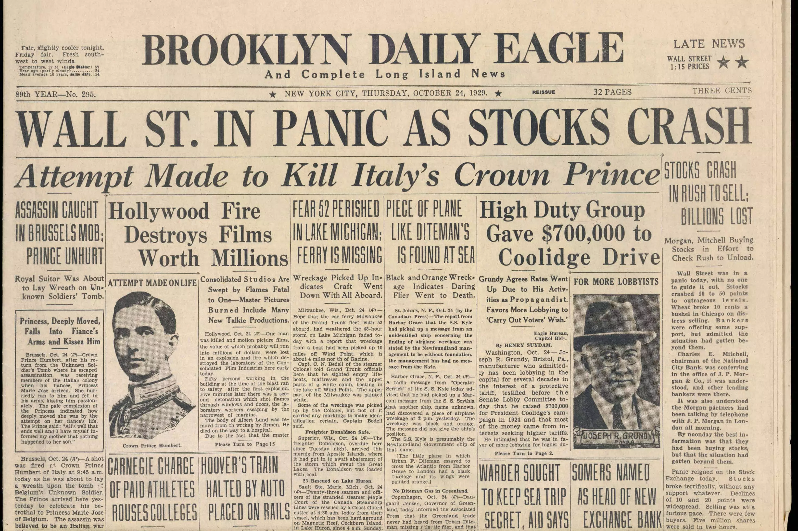

Vidéos
2
1
Vidéo · Short
GB vs UK
2
Vidéo · Reportage
Reportage sur la NHS
Ces Britanniques qui se font opérer à l'étranger
Podcasts
1
3
Podcast
Fifty States
Produit par Quotidien, ce podcast hebdomadaire en français raconte chacun des 50 États américains (histoire, politique, cinéma, musique, gastronomie, anecdotes), une façon vivante de découvrir la culture et la diversité des États-Unis.
Articles
2
4
Article
Brexit in a few words

Lire l'article
Brexit in a few words
Le retrait du Royaume-Uni de l'Union européenne : causes profondes et conséquences durables.
Ouvrir l'article
5
Article
Crashes, Collapses and Scandals

Lire l'article
Crashes, Collapses and Scandals
A century of financial crises in the English-speaking world, from the 1929 crash to Silicon Valley Bank.
Ouvrir l'article